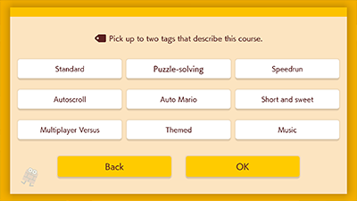

How do I find a Course ID?
You can find it by selecting that course in Course World.
How do I find a Maker ID?
You can find it by selecting the image of the Maker on the Maker profile.
Select on a Maker's profile.
How do I play courses that my friends made?
Ask your friends for their Maker IDs and follow them. Once you've followed them, go to Courses -> or Leaderboards -> to view their courses.
Tags, such as Puzzle-solving or Speedrun, are descriptors used for different types of courses. By adding tags to your courses, it'll be easier for other users to find your courses. If you don't want other users to be able to change the tags on courses that you've uploaded, open Settings and select Lock under Tags for My Courses.

Comments are messages from other Makers that pop up while a course is being played. You can post comments on a course while playing it or after clearing it.
How do I hide comments while I'm playing a course?
Press while playing a course to open the pause menu. Change the Display Comments setting to to hide comments.
How do I prevent users from making comments on courses I've uploaded?
In Settings, change Comments on My Courses to Don't allow.
How do I report an inappropriate comment?
Select a course, then select See Comments. An icon will display beneath comments that can be reported. Please refrain from making unnecessary reports.
How do I delete an uploaded course from the server?
If you're really sure you want to delete your course, go to your Maker profile, choose Uploaded Courses, find the course, and select Delete.
A course that I uploaded disappeared. Where did it go?
Uploaded courses can be deleted for many reasons, such as including inappropriate words. When uploading a course, be smart when coming up with the course name and the course description.
How do I report a course?
Select the course and choose Report. Please refrain from making unnecessary reports.
How do I report an inappropriate Maker name?
Select the Maker's Mii from their Maker profile and choose Report Maker Name. Please refrain from making unnecessary reports.